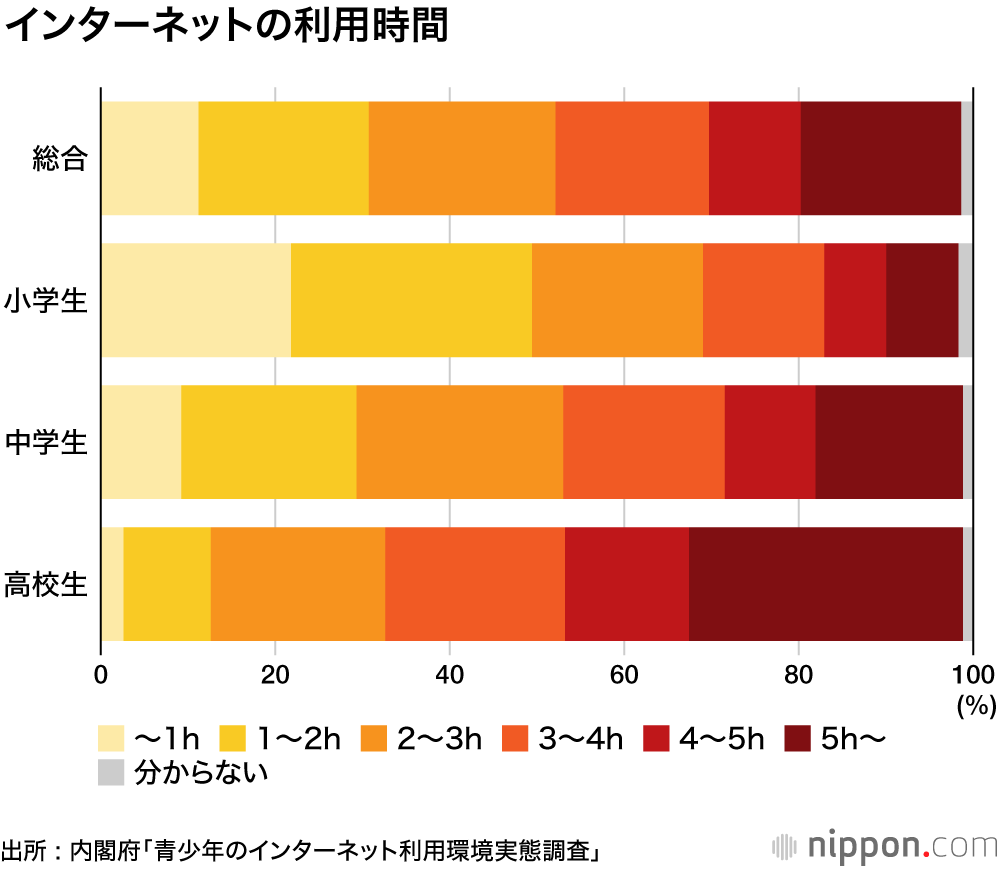

What you'll learn
- プログラミングは専門家だけのもの？
- 今どきの子供たち
- これから直面する日本の課題
- これからの日本が目指すべき社会
- 現代社会で活用されるAI
プログラミングのイメージってこんな感じじゃないですか？
プログラミングの一般的なイメージ
●難しい
●専門家の仕事
●黙々とタイピング
プログラミングは難しくありません
×プログラミングは男子がやるもの
×おたくの趣味
×理系の人だけが勉強する学問
こんなイメージを持っていたら捨てちゃいましょう。
【参考】NASAの月面着陸を支えた女性プログラマー
身の回りにはコンピュータを内蔵した機械がたくさんあります
しかし、子供たちにとってコンピュータというと

子供たちとってのコンピュータ（スマホ、タブレット、PC）などをどのように利用しているかというとグラフのように、小中学生の半数以上が2~3時間インターネットを利用している。

●急激な人口減少・高齢化
●仕事や産業の劇的な変化
●先進国の中でも低い生産性
●労働生産性を高めるためには...
アメリカではたった13年で交通手段の主役が馬車から自動車に替わりました。
日本でも過去に同じようなことがありました。
2008年夏にはiPhone3Gが日本で発売されたのを皮切りに右肩上がりでスマートフォンが普及していき、今日に至りました。
●静岡県のきゅうり農家
人手に頼った等級判別は作業者により等級にバラつきがでる...どうにかできないか...
●福岡県のクリーニング店
受付を無人化するために自動で衣類を判別
●千葉県のパン屋
種類の多いパンをAIで自動認識して会計をスムーズに行う
行政の力だけでは解決できない社会の困ったをITの力で解決
→ゴミの収集日や捨て方をスマホで簡単にわかるアプリ
→保育園の情報が検索できる地図
→大学のサーバが停止してしまったので新入生が代わりのツールを開発
【補足】プログラムが書けるようになると
→ちょっとプログラムが書けると作業を自動でやってくれ、効率が上がります。
→高校で「情報」を学習した生徒がこれくらいのことができるような社会になって欲しいと思いませんか？